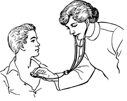

Como é o tratamento da dengue?
Não existe um tratamento específico, o que pode ser feito em casos leves da doença é o tratamento dos sintomas de acordo com prescrição médica. Além disso no geral o médico indica ao paciente que beba bastante água e soro.
Tratamento da dengue hemorrágica
O tratamento da dengue hemorrágica deve ser orientado por um clínico geral e/ou pelo infectologista e deve ser feito no hospital, já que é necessária hidratação diretamente na veia e monitorização da pessoa, já que além da desidratação é possível que aconteça alterações hepáticas, cardíacas, respiratórias ou no sangue.
O fragmento acima foi retirado do site tuasaude.com
A dengue hemorrágica é muito seria, em qualquer caso de suspeita vá ao médico imediatamente!